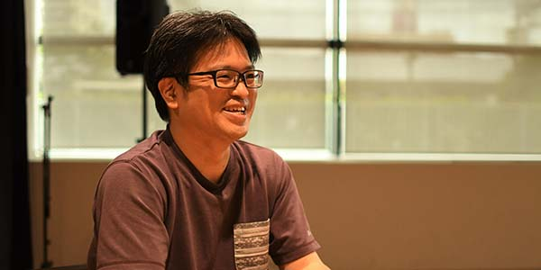

Last Update. Jan. 2nd, 2023

石井 育規
Yasunori Ishii
パナソニック ホールディングス株式会社 テクノロジー本部
リードエンジニア
Profile
2003年3月 岡山大学大学院自然科学研究科 知能計算機研究室 修了
2003年4月 パナソニック株式会社 入社
2022年4月 パナソニック ホールディングス株式会社
専門分野
Computer Vision, Patter Recognition, Image Processing, Computational Photography, Deep Learning
学会活動
電子情報通信学会 パターン認識メディア理解研究会専門委員 2007~2011
電子情報通信学会 画像工学研究会専門委員 2014~2018
電子情報通信学会 査読委員 2017~
画像電子学会代議員 2011~2018
受賞
MIRU2002 Best Paper Session
MVA2013 Best Poster Award
パナソニック グループ本部長賞(2016)
パナソニック グループ事業部長賞(2019)
MIRU2020 インタラクティブ発表賞
MVA2021 Best Poster Award
国内査読無し
鏡平面への映り込みを考慮した Photometric Image-Based Rendering (セッション 2 3 次元画像技術と応用), 石井育規， 向川康博， 尺長健, 研究会講演予稿 190, 57-64
相互反射を含むシーンにおける画像の線形化と光学現象の解析 石井育規， 向川康博， 尺長健 情報処理学会研究報告コンピュータビジョンとイメージメディア (CVIM) 2003 (36 (2002-CVIM-137 …
MIRU2015 若手の会実施報告 (マルチメディア・仮想環境基礎) 満上育久， 石井育規， 河合紀彦電子情報通信学会技術研究報告= IEICE technical report: 信学技報 115 (415 … 2016
MIRU2015 若手の会実施報告 (パターン認識・メディア理解) 満上育久， 石井育規， 河合紀彦情報通信学会技術研究報告= IEICE technical report: 信学技報 115 (414), 261-268
MIRU2015 若手の会実施報告 満上育久， 石井育規， 河合紀彦， 川西康友， 久保尋之， 米谷竜， 舩冨卓哉 研究報告コンピュータビジョンとイメージメディア (CVIM) 2016 (42), 1-822016
Destination Network におけるネットワークモデルの検討 家崎遥，平川翼，山下隆義，藤吉弘宣（中部大），藤村亮太， 石井育規，築澤宗太郎（パナソニック）, 平成３０年度 電気・電子・情報関係学会 東海支部連合大会
異なる条件に対応した秘匿画像を復元する条件付き変分オートエンコーダ 石井育規(パナソニック)，山下隆義(中部大)， 第22回画像の認識・理解シンポジウム (MIRU2019)
CutDepth:エッジ特徴を意識したデプス貼り付けによるデータ拡張, 石井育規 (パナソニック), 山下隆義 (中部大) , 画像の認識理解シンポジウム(MIRU2021)
Frame Shuffle: 時系列情報のシャッフルによる長期行動認識のためのデータ拡張, 石坂 隼, 石井 育規 (パナソニック), Ehsan Adeli (スタンフォード大), 山下 隆義 (中部大), 小塚 和紀 (パナソニック), 画像の認識理解シンポジウム(MIRU2022)
中村 譲, 石井 育規, 佐藤 智, 丸山 悠樹, 山下 隆義, “ドメイン適応を利用したFIRカメラにおける物体検出,” 信学技報, vol. 121, no. 304, PRMU2021-50, pp. 142-147, 2021年12月.
空中超音波を用いた共同学習変分オートエンコーダによる人物領域の可視化, 日本音響学会講演論文集(2022春), pp.607-610, 2022, 谷川理佐子, 石井育規, 小塚和紀 (パナソニック), 山下隆義 (中部大)
レンズレスマルチピンホールカメラによるプライバシーを配慮した顔認識
電子情報通信学会学会誌(2023年1月号) Vol.106 No.1pp.47-51
https://www.journal.ieice.org/summary.php?id=k106_1_47&year=2023&lang=J
国内査読有り
光学現象の分類基準を利用した画像の線形化 石井育規， 福井孝太郎， 向川康博， 尺長健 画像の認識・理解シンポジウム (MIRU2002), pp. II-167–176 【優秀論文セッション】
ブロック差分特徴と向き推定誤り補償を用いた横顔検出 石井育規, 今川和幸, 福宮英二, 岩佐克博, 小倉康伸 (松下電器) 画像の認識理解シンポジウム(MIRU2005)
赤司竜一，石井育規，長原一，向川康博，谷口倫一郎，八木康史， ``全方位観測による散乱光トモグラフィ'', 画像の認識・理解シンポジウム(MIRU2014), SS2-47, July, 2014.】
神谷 龍司, 川口 俊樹, 福井 宏, 石井 育規, 小塚 和紀, 羽川 令子, 築澤 宗太郎, 山内 悠嗣, 山下 隆義, 藤吉 弘亘, Convolutional-Recurrent Neural Network による自己運動識別. 第22回画像センシングシンポジウム(SSII2016) , IS2-13, 2016
古川 弘憲, 山下 隆義, 山内 悠嗣, 藤吉 弘亘, 石井 育規, 羽川 令子, 2D-QRNNを導入したDCNNによるセマンティックセグメンテーションの高精度化と高速化
第20回画像の認識理解シンポジウム (MIRU2017), 2017
Biweight法を用いたノイズにロバストな画像生成 石井育規，藤村亮太，築澤宗太郎，第22回画像の認識・理解シンポジウム (MIRU2019),
奥野 智行, 中田 洋平, 石井 育規, 築澤 宗太郎, 第26回画像センシングシンポジウム(SSII2020) , IS2-10, ロスレスAI ‐量子化前後の推論結果同一性を担保した学習手法の検討‐
レンズレスマルチピンホールカメラによるプライバシーを配慮した顔認識 , 石井 育規，佐藤 智，山下 隆義, 画像の認識理解シンポジウム(MIRU2020)
レンズレスマルチピンホールカメラからの行動識別, 佐藤 智, チャンシン ヂォゥ, ポンサク ラサン, 石井 育規, 藤村 亮太, 山下 隆義 , 画像の認識理解シンポジウム(MIRU2020) (インタラクティブ発表賞)
Ultrasound-based Human Segmentation using Collaborative Learning Probabilistic U-Net, Risako Tanigawa, Yasunori Ishii, Kazuki Kozuka (Panasonic), Takayoshi Yamashita (Chubu Univ.), 画像の認識理解シンポジウム(MIRU2022)
Rethinking Generic Camera Models for Deep Single Image Camera Calibration to Recover Rotation and Fisheye Distortion, Nobuhiko Wakai, Satoshi Sato, Yasunori Ishii (Panasonic), Takayoshi Yamashita (Chubu Univ.) , 画像の認識理解シンポジウム(MIRU2022)
クラス間距離を考慮した混合クラスの選択によるデータ拡張, 藤井 駿伍 (中部大), 小塚 和紀, 石井 育規 (パナソニック), 平川 翼, 山下 隆義, 藤吉 弘亘 (中部大), 画像の認識理解シンポジウム(MIRU2022)
国内論文誌
光学現象の分類に基づく画像の線形化 石井育規， 福井孝太郎， 向川康博， 尺長健 情報処理学会論文誌コンピュータビジョンとイメージメディア (CVIM) 44 (SIG05 (CVIM6)), 11-21
画像の線形化による光学現象の解析 向川康博， 石井育規， 尺長健 情報処理学会論文誌コンピュータビジョンとイメージメディア (CVIM) 45 (SIG08 (CVIM9)), 40-52
国際会議
"Ishii, Yasunori; Imagawa, Kazuyuki; Fukumiya, Eiji; Iwasa, Katsuhiro; Ogura, Yasunobu; ",Profile face detection using block difference feature for automatic image annotation,2006 Digest of Technical Papers International Conference on Consumer Electronics,,,337-338,2006,IEEE
Y.Mukaigawa, Y.Ishii, T.Shakunaga, "Classification of Photometric Factors Based on Photometric Linearization", Proc. of Asian Conference on Computer Vision (ACCV2006), Vol.2, pp.613-622, Jan.2006.
Y.Ishii, T.Arai, Y.Mukaigawa, J.Tagawa, Y.Yagi, "Scattering Tomography by Monte Carlo Voting", Proc. IAPR International Conference on Machine Vision Applications (MVA2013), May. 2013. (Best Poster Award)
Y.Ishii, T.Arai, Y.Mukaigawa, J.Tagawa, Y.Yagi, "Scattering Tomography by Monte Carlo Voting", The 8th International Workshop on Robust Computer Vision (IWRCV2014), Jan. 2014.
Yasunori Ishii, Reiko Hagawa and Sotaro Tsukizawa, Deep Learning using Heterogeneous Feature Maps for Maxout Networks.
In Proc. 3rd Asian Conference on Pattern Recognition 2015(ACPR2015), pages 459--463, 2015.
Reiko Hagawam, Yasunori Ishii and Sotaro Tsukizawa, Multi-staged deep learning with created coarse and appended fine categories. In Proc. 3rd Asian Conference on Pattern Recognition 2015(ACPR2015), pages 36--40, 2015.
Explain to Fix: A Framework to Interpret and Correct DNN Object Detector Predictions: Denis A Gudovskiy (Panasonic); Alec Hodgkinson (Panasonic); Takuya Yamaguchi (Panasonic); Yasunori Ishii (Panasonic); Sotaro Tsukizawa (Panasonic), NeurIPS2018 Workshop, MLSys: Workshop on Systems for ML and Open Source Software.
Adherent Raindrop Removal with Self-Supervised Attention Maps and Spatio-Temporal Generative Adversarial Networks,; Stefano Alletto, Casey Carlin, Luca Rigazio, Yasunori Ishii, Sotaro Tsukizawa; The IEEE International Conference on Computer Vision (ICCV) Workshop Autonoous Driving, 2019, Oct.
Privacy-Aware Face Recognition with Lensless Multi-Pinhole Camera, Yasunori Ishii, Takayoshi Yamashita, Satoshi Sato, European Conference on Computer Vision(ECCV) Workshop "The Bright and Dark Sides of Computer Vision: Challenges and Opportunities for Privacy and Security (CV-COPS20)"
Simultaneous Visual Context-aware Path Prediction, Haruka Iesaki, Tsubasa Hirakawa, Takayoshi Yamashita, Hironobu Fujiyoshi, Yasunori Ishii, Kazuki Kozuka, Ryota Fujimura, "International Conference on Computer Vision Theory and Applications (VISAPP) 2020"
Lossless AI: Toward Guaranteeing Consistency between Inferences Before and After Quantization via Knowledge Distillation
T.Okuno, Y. Nakata, Y. Ishii and S.Tsukizawa, 17th International Conference on Machine Vision Applications(MVA2021) (Best Poster Award)
CutDepth:Edge-aware Data Augmentation in Depth Estimation poster, Yasunori Ishii (Panasonic), Takayoshi Yamashita (Chubu University),
International Conference on Computer Vision(ICCV) Workhop "
Interactive Labeling and Data Augmentation for Vision".(https://ildav-workshop.github.io/)
Rethinking Generic Camera Models for Deep Single Image Camera Calibration to Recover Rotation and Fisheye Distortion, Nobuhiko Wakai, Satoshi Sato, Yasunori Ishii ( Panasonic Holdings ), Takayoshi Yamashita ( Chubu University ), European Conference on Computer Vision 2022(ECCV2022)
Risako Tanigawa, Yasunori Ishii, Kazuki Kozuka, Takayoshi Yamashita, Invisible-to-Visible: Privacy-Aware Human Segmentation using Airborne Ultrasound via Collaborative Learning Probabilistic U-Net, "ECCV2022 Workshop AV4D: Visual Learning of Sounds in Spaces"
Few-shot Adaptive Object Detection with Cross-Domain CutMix, Yuzuru Nakamura, Yasunori Ishii, Yuki Maruyama, Takayoshi Yamashita, "Proceedings of the Asian Conference on Computer Vision (ACCV), 2022, pp. 1350-1367"
国際論文誌
"Ishii, Yasunori; FUKUI, Kohtaro; Mukaigawa, Yasuhiro; Shakunaga, Takeshi; ",Photometric linearization based on classification of photometric factors,Trans. ISP J. CVIM,44,5,11-21,2003,Information Processing Society of Japan (IPSJ)
Y.Mukaigawa, Y.Ishii, T.Shakunaga, ``Analysis of photometric factors based on photometric linearization'', Journal of the Optical Society of America A, Vol. 24, Issue 10, pp. 3326-3334, Oct.2007.
preprint
Gudovskiy, Denis; Hodgkinson, Alec; Yamaguchi, Takuya; Ishii, Yasunori; Tsukizawa, Sotaro; ,Explain to Fix: A Framework to Interpret and Correct DNN Object Detector Predictions,arXiv preprint arXiv:1811.08011
CutDepth:Edge-aware Data Augmentation in Depth Estimation poster, Yasunori Ishii (Panasonic), Takayoshi Yamashita (Chubu University),
arXiv preprint arXiv:2107.07684 [cs.CV])
Rethinking Generic Camera Models for Deep Single Image Camera Calibration to Recover Rotation and Fisheye Distortion, Nobuhiko Wakai, Satoshi Sato, Yasunori Ishii (Panasonic), Takayoshi Yamashita (Chubu University),
arXiv preprint arXiv:2111.12927 [cs.CV]
Invisible-to-Visible: Privacy-Aware Human Instance Segmentation using Airborne Ultrasound via Collaborative Learning Variational Autoencoder, Risako Tanigawa, Yasunori Ishii, Kazuki Kozuka (Panasonic), Takayoshi Yamashita (Chubu University),
arXiv preprint arXiv:2204.07280 [cs.CV]
Invisible-to-Visible: Privacy-Aware Human Segmentation using Airborne Ultrasound via Collaborative Learning Probabilistic U-Net, Risako Tanigawa, Yasunori Ishii, Kazuki Kozuka (Panasonic), Takayoshi Yamashita (Chubu University),
arXiv preprint arXiv:2205.05293 [cs.CV]
Data Augmentation by Selecting Mixed Classes Considering Distance Between Classes, Shungo Fujii, Yasunori Ishii, Kazuki Kozuka, Tsubasa Hirakawa, Takayoshi Yamashita, Hironobu Fujiyoshi
arXiv preprint arXiv:2209.05122 [cs.CV]
講演
全脳アーキテクチャ若手の会 関西支部異文化交流会 "ミニドラから考えるAIエージェントの未来セッション", 2017年10月
岡山大学 スーパーグローバルカミングデー, 「パナソニックで取り組んできた研究開発事例とそこで活きた学生時代の経験」, 2017年10月
中部大学 画像情報処理, 2018年7月
取材, 記事，プレスリリース
日経Robototics.2020年9月号 "パナソニックが圧縮と併用で品質保証しやすい学習技術、組み込みディープニューラルネットの開発工数を5割削減へ", 2020.8.11,
https://xtech.nikkei.com/atcl/nxt/mag/rob/18/012600001/00061/?fbclid=IwAR1O5paiBc6m7PU6_2771LrmELYQ8XW_kmL9ObP3_VHyHzgkiI6t2z1fZII
パナソニックの#はたらくってなんだろう, 組込み軽量化前後の挙動の不一致を抑制、高品質AIで開発工数を短縮化,
https://recruit.jpn.panasonic.com/feed/lossless_ai.html
ディープラーニング初心者の音響エンジニアが半年で論文投稿へ ― 若手を着実に成長させるパナソニックのトップ人材育成プログラムREAL-AI
https://tech-ai.panasonic.com/jp/researcher_interview/018/
Panasonic プレスリリース: AI・ロボティクス分野のトップカンファレンスECCV2022、およびIROS2022に論文採択
https://tech-ai.panasonic.com/jp/news_page.html?id=20220928
上記プレスに関連する記事
PRTIMES様
https://prtimes.jp/main/html/rd/p/000004857.000003442.html
LEDGE AI様
https://ledge.ai/panasonic-ai-202209/
BtoBプラットフォーム様
https://b2b-ch.infomart.co.jp/news/detail.page?IMNEWS1=3547308
上記の技術紹介ブログ
https://tech-ai.panasonic.com/jp/blog_page.html?id=20221024
https://tech-ai.panasonic.com/jp/blog_page.html?id=20221024
Panasonic News Room Japan: AI・ロボティクス分野のトップカンファレンスECCV2022、およびIROS2022に論文採択
https://news.panasonic.com/jp/press/jn220928-1
パナソニック、写真1枚でゆがみ補正 革新的な新手法, 日経新聞 2022年12月5日
https://www.nikkei.com/article/DGXZQOUC257W50V21C22A1000000/
「学習時間27年を1日に」、パナソニックの若手が画像処理で画期的成果
, 日経クロステック 2022年11月24日
https://xtech.nikkei.com/atcl/nxt/column/18/00001/07420/
上記の海外記事
https://www.catchasia-medianetwork.com/Press-Releases/Panasonic/20220928_01/PR_C43_20220928_01.html
Panasonic Develops New Method That Corrects Fisheye Distortion in Photos
https://petapixel.com/2022/12/06/panasonic-develops-new-method-that-corrects-fisheye-distortion-in-photos/
国内特許
https://patentfield.com/patents?q=%E7%9F%B3%E4%BA%95%E8%82%B2%E8%A6%8F&view%5Bcolor_set%5D%5B%5D=
海外特許
https://patentfield.com/patents?q=%22yasunori%20ishii%22%20and%20%22panasonic%22&view%5Bcolor_set%5D%5B%5D=